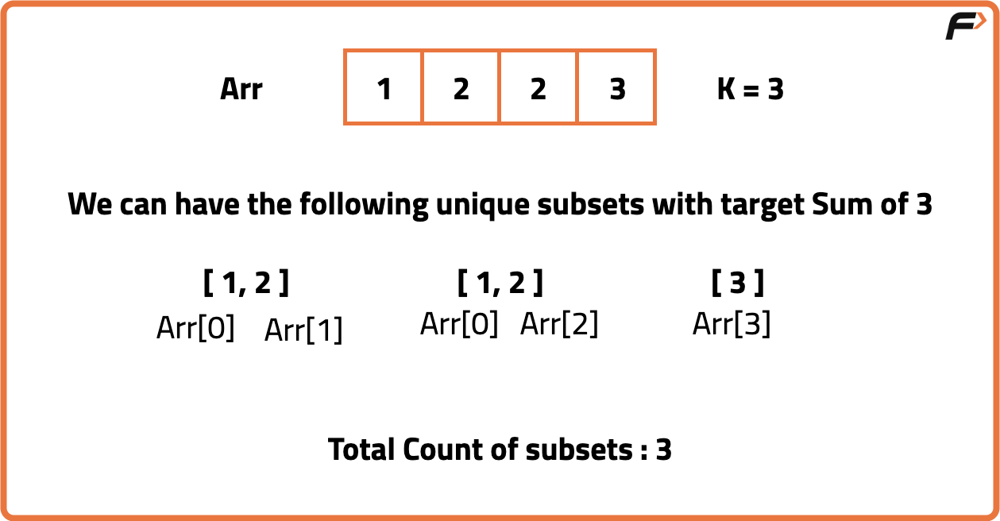

Count Subsets with Sum K (DP - 17)
Problem Statement : Given an array arr of n integers and an integer K, count the number of subsets of the given array that have a sum equal to K.
Examples
Input: arr = [1, 2, 2, 3], K = 3 Output: 3
Explanation: The subarrays [1,2], [1,2] and [3] have a sum of 3. Input: arr = [1, 2, 3, 4, 5], K = 5 Output: 3 Explanation: The subsets are [5], [2, 3], and [1, 4].
Disclaimer: Here is the practice link to help you assess your knowledge better. It's highly recommend trying to solve it before looking at the solution.
Memoization
Algorithm
The problem of counting subsets with a given sum K can be thought of as a decision process where, for each element in the array, we either include it in the subset or exclude it. If we include it, the target reduces by that element’s value and if we exclude it, the target remains the same. This naturally forms a recursion. However, many subproblems repeat, such as computing the number of ways to reach the same target with the same index again and again.
To avoid redundant work, we use memoization, where each state defined by the pair (index, target) is stored after being computed once. This way, instead of exploring an exponential number of recursive paths, we reuse previously computed results, bringing the complexity down to polynomial time.
To avoid redundant work, we use memoization, where each state defined by the pair (index, target) is stored after being computed once. This way, instead of exploring an exponential number of recursive paths, we reuse previously computed results, bringing the complexity down to polynomial time.
- Define a recursive function that takes the current index and the remaining target sum as parameters
- If the target becomes zero, return 1 because one valid subset is found
- If the index is zero, check if the first element equals the target, and return 1 if true, else 0
- Before solving, check if the result for this state is already stored in a dp table, and if yes, return it
- Recursively call the function by excluding the current element, keeping the target unchanged
- If the current element is less than or equal to the target, also call the function by including it and reducing the target
- Add the results of including and excluding to get the total number of subsets for this state
- Store the result in the dp table and return it
Code
#include <bits/stdc++.h>
using namespace std;
class Solution {
public:
// Function to count subsets that sum up to target
int countSubsets(vector<int>& nums, int target) {
// Initialize dp table with -1 (uncomputed states)
vector<vector<int>> dp(nums.size(), vector<int>(target + 1, -1));
return solve(nums.size() - 1, target, nums, dp);
}
private:
// Recursive helper with memoization
int solve(int index, int target, vector<int>& nums, vector<vector<int>>& dp) {
// Base case: if target is 0, we found a valid subset
if (target == 0) return 1;
// Base case: if we are at index 0, check if nums[0] equals target
if (index == 0) return (nums[0] == target ? 1 : 0);
// If already computed, return from dp
if (dp[index][target] != -1) return dp[index][target];
// Case 1: Exclude current element
int notTake = solve(index - 1, target, nums, dp);
// Case 2: Include current element (if it is not greater than target)
int take = 0;
if (nums[index] <= target) {
take = solve(index - 1, target - nums[index], nums, dp);
}
// Store result in dp and return
return dp[index][target] = take + notTake;
}
};
int main() {
vector<int> nums = {1, 2, 3, 3};
int target = 6;
Solution obj;
cout << obj.countSubsets(nums, target) << endl;
return 0;
}
Complexity Analysis
Time Complexity: O(N * K), each state defined by index and target is computed once.Space Complexity: O(N * K), extra space is used for the dp table and recursion stack.
Tabulation
Algorithm
The problem of counting subsets with a given sum K can be solved using tabulation by building the solution bottom-up. Instead of starting with recursion, we construct a dp table where each entry dp[i][t] represents the number of subsets that can be formed using the first i elements to achieve the sum t. We iteratively fill this table, considering for each element whether we include it or exclude it.
This way, we systematically compute the answer without recursion and avoid stack overhead, while still ensuring that overlapping subproblems are reused effectively.
This way, we systematically compute the answer without recursion and avoid stack overhead, while still ensuring that overlapping subproblems are reused effectively.
- Create a 2D dp table where dp[i][t] means number of subsets using first i elements to make sum t
- Initialize dp[0][0] as 1 because with zero elements, only one subset (empty set) makes sum 0
- If the first element is less than or equal to K, set dp[0][arr[0]] as 1 because a single element can form that sum
- Iterate over all elements from index 1 to n-1
- For each element, iterate over all target sums from 0 to K
- For each dp[i][t], first take the value from dp[i-1][t] (excluding current element)
- If current element is less than or equal to t, also add dp[i-1][t - arr[i]] (including current element)
- At the end, dp[n-1][K] will hold the total number of subsets with sum equal to K
Code
#include <bits/stdc++.h>
using namespace std;
class Solution {
public:
int countSubsets(vector<int>& arr, int K) {
// Get number of elements
int n = arr.size();
// Create dp table with dimensions n x (K+1)
vector<vector<int>> dp(n, vector<int>(K + 1, 0));
// Base case: one subset (empty set) makes sum 0
dp[0][0] = 1;
// If first element is <= K, mark dp[0][arr[0]] as 1
if (arr[0] <= K) dp[0][arr[0]] = 1;
// Fill the table
for (int i = 1; i < n; i++) {
for (int target = 0; target <= K; target++) {
// Exclude current element
int notTake = dp[i - 1][target];
// Include current element if possible
int take = 0;
if (arr[i] <= target) take = dp[i - 1][target - arr[i]];
// Total ways
dp[i][target] = notTake + take;
}
}
// Final answer
return dp[n - 1][K];
}
};
int main() {
Solution obj;
vector<int> arr = {1, 2, 3, 3};
int K = 6;
cout << obj.countSubsets(arr, K) << endl;
return 0;
}
Complexity Analysis
Time Complexity: O(N * K), each state defined by index and target is computed once.Space Complexity: O(N * K), extra space is used for the dp table.
Space Optimization
Algorithm
The problem of counting subsets with a given sum K can also be solved with space optimization.
Instead of storing results for all n rows, we notice that dp[i][t] only depends on the previous row. Thus instead of storing entire table, we can only store the previous row.
- Create a 1D dp array of size (K + 1), where dp[t] represents number of subsets that sum to t
- Initialize dp[0] = 1 because there’s always one subset (empty set) with sum 0
- If the first element is less than or equal to K, set dp[arr[0]] = 1
- Iterate through the array from index 1 to n-1
- For each element, traverse target sums backwards from K down to arr[i]
- Update dp[t] by adding dp[t - arr[i]], meaning we include the current element
- Backward traversal ensures we don’t overwrite values that are yet to be used
- At the end, dp[K] will hold the total number of subsets that sum to K
Code
#include <bits/stdc++.h>
using namespace std;
class Solution {
public:
int countSubsets(vector<int>& arr, int K) {
// Create a dp array of size K+1 initialized to 0
vector<int> dp(K + 1, 0);
// Base case: One subset (empty set) makes sum 0
dp[0] = 1;
// If first element <= K, mark it as a subset
if (arr[0] <= K) dp[arr[0]] += 1;
// Loop through elements starting from index 1
for (int i = 1; i < arr.size(); i++) {
// Create a temporary dp array for current element
vector<int> curr(K + 1, 0);
// Empty set always makes sum 0
curr[0] = 1;
// Iterate over all possible targets
for (int t = 0; t <= K; t++) {
// Exclude current element
int notTake = dp[t];
// Include current element if possible
int take = 0;
if (arr[i] <= t) {
take = dp[t - arr[i]];
}
// Total ways = include + exclude
curr[t] = take + notTake;
}
// Update dp for next iteration
dp = curr;
}
// Return answer for sum K
return dp[K];
}
};
int main() {
Solution sol;
vector<int> arr = {1, 2, 3};
int K = 4;
cout << sol.countSubsets(arr, K) << endl;
return 0;
}
Complexity Analysis
Time Complexity: O(N * K), each state defined by index and target is computed once.Space Complexity: O(K), extra space is used for storing the dp array.